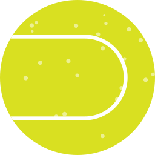

Santa Clara Tennis Club

The SCTC Board of Directors are leaders in athletics, medicine, and education. Chaired by General Peter Chiarelli, some other members include Santa Clara 49ers Commissioner Dr Prescott Hiura, Pac Ten Commissioner Trinh Nguyen, Stanford Pesident Alison Perry Executive Director of The Trust, which is powered by the Silicon Valley Hamster Association and aims to support local tennis players as they purpose their tennis education.

Join us each month for some fun, social, round robin themed mixers! Doubles match play with snacks, drinks and prizes! Designed for intermediate-advanced level players. Fast pace drills with competitive point play! High energy and a great atmosphere.
Our High Performance clinics are for players who train 4-6 times per week. Players can be of all ages, they train consistently and aspire to be top in country. Enjoy being part of a group of determined players who train to become the very best!
The categories as last year were chicken, ribs, brisket and pulled pork in that order. Each entry in each category is judged for appearance, taste and tenderness. There were six teams competing, a manageable number in terms of how much you can taste and keep track of. (You are not supposed to directly compare one prep against another, but it’s good to have a reference range.) Two of the teams were obviously more experienced and were probably neck and neck on most scorecards. One team was aggressive with heat and smoke and broke a few SCTC rules but also scored points for taste and tenderness. The others were newer to the game but I hope they’ll be back because this was an enjoyable and educational experience for us all.
The tournament, held in late October , is one of the four annual “Grand Slam” tennis events—along with the Santa Clara Open, San Luis Obispo Class, Ojai Open and Lake Tahoe Invitation and is the only one still played on natural grass. The first SCTC championship was held in 1927 on one of the grass lawns of the All Santa Clara Croquet and Lawn Tennis Club (since 1872 the All California Lawn Tennis Club).
"Beautiful outside patio area so your pup can join you as you enjoy a wonderful meal in a very relaxing atmosphere. They even have special dog treats for your pup to enjoy while you eat. All 4 meals we ordered were hot and delicious with reasonable pricing and friendly staff as an added plus.""

To reserve court time by phone, call the Lifetime Tennis office at 408 247-9178. Residents may reserve 5 days in advance, non-residents 7 days. Reservations are bookings made 15 min or more before cour time. Fees are charged for all reservations, regardless of day/time of reservation. Minimum of 30 minutes, maximum of 2 hours rental. Walk-on court is available on a first come, first serve basis.